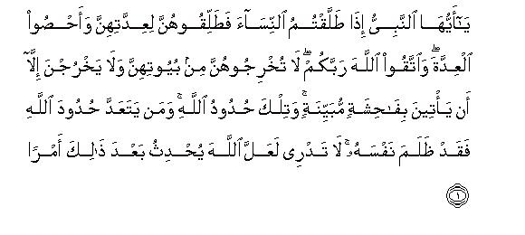
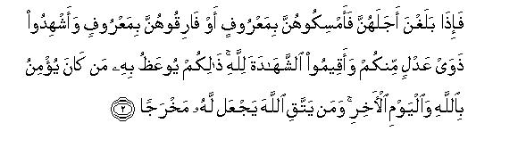
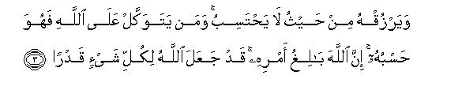
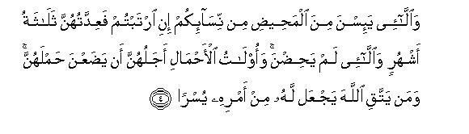
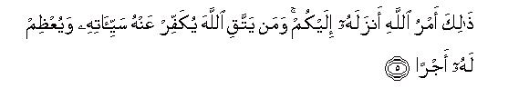
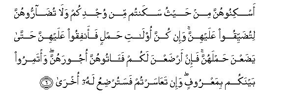
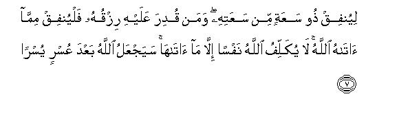
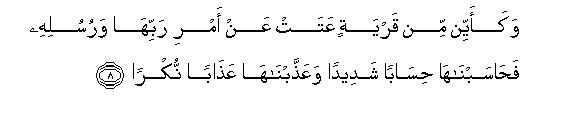
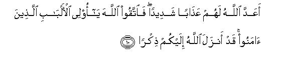

بسم الله الرحمن الرحيم
Sayyid Abul Ala Maududi - Tafhim al-Qur'an - The Meaning of the Qur'an
 65.
Surah At Talaq (Divorce)
65.
Surah At Talaq (Divorce)
At-Talaq is not only the name of this Surah but also the title of its subject matter, for it contains commandments about Talaq (divorce) itself. Hadrat `Abdullah bin Mas`ud has described it as Surah an-Nisa al-qusra also, i.e. the shorter Surah an-Nisa.
Hadrat Abdullah bin Masud has Pointed out, and the internal evidence of the subject matter of the Surah confirms the same, that it must have been sent down after those verses of surah Al-Baqarah in which commandments concerning divorce were given for the first time. Although it is difficult to determine precisely what is its exact date of revelation, yet the traditions in any case indicate that when the people started making errors in understanding the commandments of Surah Al-Baqarah, and practically also they began to commit mistakes, Allah sent down these instructions for their correction.
In order to understand the commandments of this Surah, it would be useful to refresh one's memory about the instructions which have been given in the Qur'an concerning divorce and the waiting period (Iddat) above.
"Divorce may be pronounced twice; then the wife may either be kept back in fairness or allowed to separate in fairness." (Al Baqarah 229)
"And the divorced women (after the pronouncement of the divorce) must wait for three monthly courses... and their husbands are fully entitled to take them back (as their wives) during this waiting period, if they desire reconciliation." (Al Baqarah 228)
"Then, if the husband divorces his wife (for the third time), she shall not remain lawful for him after this divorce, unless she marries another husband..." (Al-Baqarah : 230)
"When you marry the believing women, and then divorce them before you have touched them, they do not have to fulfill a waiting period, the completion of which you may demand of them." (Al-Ahzab : 49)
"And if those of you who die, leave wives behind, the women should abstain (from marriage) for four months and ten days." (Al-Baqarah 234)
The rules prescribed in these verses were as follows:
A man can pronounce at the most three divorces on his wife.
In case the husband has pronounced one or two divorces he is entitled to keep the woman back as wife within the waiting period and if after the expiry of the waiting period the two desire to re-marry, they can re- marry there is no condition of legalization (tahlil). But if the husband has pronounced three divorces, he forfeits his right to keep her as his wife within the waiting. period, and they cannot re-marry unless the woman re-marries another husband and he subsequently divorces her of his own free will.
The waiting period of the woman, who menstruates and marriage with whom has been consummated, is that she should pass three monthly courses. The waiting period in case of one or two divorces is that the woman is still the legal wife of the husband and he can keep her back as his wife within the waiting period. But if the husband has pronounced three divorces, this waiting period cannot be taken advantage of for the purpose of reconciliation, but it is only meant to restrain the woman from re-marrying another person before it comes to an end.
There is no waiting. period for the woman, marriage with whom has not been consummated, and who is divorced even before she is touched. She can re-marry, if she likes, immediately after the divorce.
The waiting period of the woman whose husband dies, is four months and ten days.
Here, one should understand well that Surah At-Talaq was not sent down to annul any of these rules or amend it, but it was sent down for two purposes;
First, that the man who has been given the right to pronounce divorce should be taught such judicious methods of using this right as do not lead to separation, as far as possible however, if separation does take place, it should only be in case all possibilities of mutual reconciliation have been exhausted. For in the Divine Law provision for divorce has been made only as an unavoidable necessity; otherwise Allah does not approve that the marriage relationship that has been established between a man and a woman should ever break. The Holy Prophet (upon whom be Allah's peace) has said "Allah has not made lawful anything more hateful in His sight than divorce." (Abu Daud). And: "Of all the things permitted by the Law, the most hateful in the sight of Allah is the divorce, (Abu Daud)
The second object was to complement this section of the family law of Islam by supplying answers to the questions that had remained after the revelation of the commandments in Surah Al-Baqarah. So, answers have been supplied to the following questions:What would be the waiting period of the women, marriage with whom has been consummated and who no longer menstruate, or those who have not yet menstruated, in case they are divorced? What would be the waiting period of the woman, who is pregnant, or the woman whose husband dies, if she is divorced?And what arrangements would be made for the maintenance and lodging of the different categories of divorced women, and for the fosterage of the child whose parents have separated on account of a divorce?

In the name of Allah, the Compassionate, the Merciful.


[1-2] O Prophet, when you (and the believers) divorce women, divorce them for their prescribed waiting-periods,1 and count the waiting-period accurately,2 and fear Allah, you Lord. And do not turn them out of their houses (during the waiting-period), not should they themselves leave them,3 except in case they commit an open. indecency.4 These are the bounds prescribed by Allah and whoever transgresses Allah's bounds will wrong his own self. You do not know: Allah may after this bring about a situation (of reconciliation).5 Then when they have reached the end of their (waiting) periods either retain them (in wedlock) in a fair manner or part with them in a fair manner,6 and call to witness two just men from among yourselves,7 and (O witnesses) bear witness equitably for the sake of Allah.

[3] With this you are admonished, (and) whoever believes in Allah and the Last Day.8 Whosoever fears Allah in whatever he does, Allah will open for him away out of the difficulties9 and will provide for him from whence he could little imagine.10 And whoever trusts in Allah, He is enough for him. Allah brings His decrees to fulfillment.11 Allah has appointed a destiny for everything.


[4-5] And if you are in doubt about those of your women who have despaired of menstruation, (you should know that) their waiting period is three months,12 and the same applies to those who have not menstruated as yet.13 As far as pregnant women, their period ends when they deliver the burden.14 Whoever fears Allah, He makes his course easy for him. This is Allah's Command which He has sent down to you. Whoever fears Allah, Allah will remove his evils from him and will enhance his rewards.15

[6] Lodge them (in the waiting-period) where you yourselves live, according to your means, and do not harass them so as to straiten them.16

[7] And if they are pregnant, spend on them until they deliver their burden.17 Then if they suckle (the child) for you, give them their wages, and settle the question of wages) fairly by mutual consultation.18 But if you created difficulties for each other (concerning the question of wages). then another woman would suckle the child.19 Let the rich man spend according to his means and let the one whose means are restricted, spend out of what Allah has given him. Allah does not burden anyone with more than what He has given him. It may u-ell be that Allah brings about ease after hardship.


[8-11] Many a settlement20 has rebelled against the commandments of its Lord and His Messengers, and We called it to stern account and punished it severely. They tasted the evil results of their misdeeds and consequently they have nothing but ' loss in store for them. Allah has prepared from them a severe torment (in the Hereafter). So fear Allah. O you then of understanding, who have believed. Allah has sent down to you an Admonition, a Messenger21 who recites to you Allah's Revelations containing clear guidance, so that he may bring those who have believed and done good deeds out of darknesses into light.22 Whoever believes in Allah and does good deeds, Allah shall admit him into Gardens underneath which canals will be flowing. They shall live therein for ever. Allah has prepared for such a one an excellent provision.
[12] Allah is He Who created seven heavens and of the earth also their like.23 His Command descends among them. (This you are being told) so that you may know that Allah has power over everything, and that Allah's knowledge encompasses all.
1That is, "O believers, you should not make undue haste in the Matter of pronouncing divorce: your minor family quarrels should not so incite you that you should pronounce the final divorce in a fit of anger and there remains no chance for reconciliation. However When you have to divorce your wives, you should divorce them for their prescribed waiting-period." Pronouncing divorce for the waiting period has two meanings and both are implied here.
First. That "you should divorce them at a them when their waiting-period can begin. " This thing has already been prescribed in Al-Baqarah: 228 above. The waiting-period of the married woman who menstruates is three monthly courses after the pronouncement of divorce. If this commandment is kept in view the only appropriate time of pronouncing divorce that the waiting period may duly begin is when she is not in her courses, for he waiting-period cannot begin from the course during which she ma have been divorced, and divorcing her in that state would mean that, contrary to the Divine Command, her waiting-period should extend to four courses instead of three courses. Furthermore, this commandment also demands that the woman should not he divorced in the period-of purity during which the husband may have had sexual intercourse with her. For in this case, at the time divorce is pronounced neither the husband nor the wife can know whether he has conceived in consequence of the intercourse or not. Because of this neither the waiting-period can begin on the hypothesis that this would be reckoned in view of the succeeding monthly courses, nor on the hypothesis that this would be the waiting-period of a pregnant woman. So, this commandment lays down two rules simultaneously: first, that divorce should not be pronounced during menstruation; second, that divorce may be pronounced either in the period of purity during which there was no sexual intercourse with the woman, or in the state when the woman's being pregnant was known. A little consideration of the matter will show that the restrictions imposed on the pronouncement of divorce are for good reasons. The reason for imposing the restriction on the pronounce meant of divorce during menstruation is that in this state the husband and the wife are somewhat estranged from each other because of the prohibition of sexual intercourse in this start; and from the medical viewpoint also it is confirmed that the woman is not temperamentally normal during the courses. Therefore, if a quarrel starts between them in this state, both the husband and the wife would be helpless to an extent to put an end to it, and if the matter is deferred till the woman is free from her courses, there is the possibility that the woman also may return to her normal temperamental state and the mutual attraction that nature has placed between them also may work and reunite them. Likewise, the reason for prohibiting the pronouncement of divorce during the purity period in which sexual intercourse may have taken place, is that if in consequence of it conception takes place, it can neither be known to the husband nor to the wife. Therefore, it cannot be a suitable time for pronouncing the divorce. If the man comes to know that conception has taken place, he would think a hundred times before deciding finally whether he should pronounce divorce or not on the woman who carries his child in her womb. The woman also in view of the future of her child would try her best to remove the causes of her husband's displeasure. ,But if a decision is taken blindly, in undue haste, and then it is known that conception had taken place, both will regret it later.
This is the first meaning "divorcing for the prescribed waiting-period", which applies only to those women marriage with whom has been consummated, who menstruate and may possibly conceive. As for its second meaning it is this: "If you have to divorce your wives, you should divorce them till the expiry of their waiting-period". That is "Do not pronounce three divorces all at once leading to permanent separation, but pronounce one, or at the most two divorces, and wait till the end of the waiting-period, so that there remains some chance for reconciliation for you at any time during this period." According to this meaning; this commandment is also useful in respect of those woman marriage with whom has been consummated and who menstruate as well as of those who no longer menstruate, or those who have not yet menstruated, or those whose pregnancy at the time of the pronouncement of divorce is known. If this Divine Command is rightly followed, no one will regret after having pronounced divorce, for if divorce is pronounced in this way, there remains room for reconciliation within the waiting. period, and even after the expiry of the waiting-period the possibility remains that the separated husband and wife may remarry if they wish reconciliation.
This same meaning of talliqu-hunna Ii- iddat-i hinna ( divorce them for their prescribed waiting-period") has been given by the earliest commentators. Ibn 'Abbas has given this commentary of it: "One should not pronounce divorce during menstruation nor in the period of purity (tuhr) during which the husband may have had sexual intercourse. But one should leave the wife alone till she attains purity after the course; then one may pronounce a single divorce on her. In this case even if there is no reconciliation and the waiting-period expires, she would be separated by the single divorce." (Ibn Jarir)
Hadrat 'Abdullah bin Mas'ud says:
Divorce for the waiting-period means that one should pronounce the divorce in the woman s state of purity without having had an intercourse with her. " The same commentary has been reported from Hadrat `Abdullah bin `Umar, `Ata', Mujahid, Maimun bin Mahran, Muqatil bin Hayyan, and Dahhak (may Allah bless them all) (Ibn Kathir). Ikrimah has explained it thus: `One may pronounce the divorce in the state when the woman's being pregnantt is known, and not when one has had sexual intercourse with her and it is not known whether she has conceived or not." (Ibn Kathir) Both Hadrat Hasan Basri and lbn Sirin say: `Divorce should be pronounced during the state of purity without having had sexual intercourse. or when the woman's being pregnant becomes known. " (Ibn Jarir)
The intention of this verse was best explained by the Holy Prophet (upon whom be Allah's peace) himself on the occasion when Hadrat `Abdullah bin `Umar had divorced his wife while she was discharging the menses .. The, details of thin incident have been reported in almost all collections of Hadith and the same. in fact. are the source of the law in this connection. It so happened that when Hadrat `Abdullah divorced hi: wife while she was menstruating, Hadrat Umar came before the Holy Prophet and mentioned it to him. The Holy Prophet expressed great displeasure and said: Command him to take her back and keep her as his wife till she is purified, that she again menstruates and is again Purified: then if he so desires he may divorce her in her state of purity without having any sexual intercourse with her. This is the waiting-period which Allah Almighty has prescribed for the divorce of women." In a tradition the words are to the effect: "Either one may pronounce the divorce in the woman's state of purity without having a sexual intercourse, or in the state when her being pregnant becomes fully known".
The intention of this verse is further explained by a few other Ahadith which have been reported from the Holy prophet (upon wham be Allah's peace) and some of the major Companions. Nasa'i has related that the Holy Prophet was informed that a person had pronounced three divorces on his wife in one sitting. He stood up in anger and said: “Are the people playing with the Book of Allah, although I am present among you?" Seeing the Holy Prophet's extreme anger on this occasion, a person asked: “Should I not go and kill the man?"
Abdur Razzaq has reported about Hadrat `Ubadah bin as-Samit that his father pronounced one thousand divorces on his wife. He went before the Holy Prophet (upon whom be peace) and asked his ruling on it. The Holy Prophet said: “By the three divorces the woman stood separated from him along with Allah': disobedience, and 997 pronouncement remained as acts of injustice and sin, for which Allah might punish him if He so willed and forgive him if He so willed."
In the details of the incident concerning Hadrat `Abdullah bin `Umar, which have been related in Daraqutni and Ibn Abi Shaibah, another thing also is that when the Holy Prophet commanded Hadrat `Abdullah bin `Umar to take his wife back, he asked: Had I pronounced three divorces on her, could I have taken her back even then? The Holy Prophet replied: No, she would have stood separated from you, and this would have been an act of sin." In another tradition the Holy Prophet's words are to the effect: “Had you done this, you would have committed disobedience of your Lord while your wife would have been separated from you.”
The legal rulings reported from the Companions in this regard are also in complete conformity with the Holy Prophet's injunctions. According to a tradition in Mu'watta, a person came to Hadrat 'Abdullah.bin Mas'ud and said: "I have pronounced eight divorces on my wife. Ibn Mas`ud asked: What legal opinion have you been given in this regard? He said: I have been told that the woman stands separated from me. Ibn Mas`ud said: The people have said the right thing: the legal position is the same as they have told you."
'Abdur Razzaq has related from 'Alqamah that a person said to Ibn Mas'ud: "I have pronounced 99 divorces on my wife He said: Three divorces separate her from you; the rest are (acts of sin) excesses. "
Waki' bin al-Jarrah in his sunah has reported this very viewpoint of both Hadrat 'Uthman and Hadrat 'AIi. A person came to Hadrat `Uthman and said: "I have pronounced a thousand divorces on my wife-'. He replied: "She stood separated from you by three divorces." When a similar problem was presented before Hadrat `Ali he replied; `By three divorces she stood separated from you. You may distribute the rest of your pronouncements on the rest of your wives if you so like."
Abu Da'ud and Ibn Jarir have related, with a little variation in wording, a tradition from Mujahid, saying: "While I was sitting with Ibn Abbas, a person came and said: `I have pronounced three divorces on my wife.' Ibn 'Abbas heard it but kept silent for so long that I thought he was perhaps going to return his wife to him. Then he said: “One of you first commits the folly of pronouncing the divorces; then he comes and says: O lbn `Abbas, O Ibn `Abbas! whereas Allah has said that whoever fears Him in whatever he does, He will open a way for him out of the difficulties. You did not fear Allah; now I do not find any way for you: you have disobeyed your Lord, and your wife stands separated from you.”
Another tradition, which also has been reported from Mujahid and related with a little variation in wording in mu'watta and Tefsir by Ibn Jarir, says: “A person pronounced a hundred divorces on his wife; then he asked Ibn 'Abbas for his opinion. He replied: 'By three divorces she stood separated from you. With the other 97 you made a Jest of the Revelations of Allah!" This is according to Mu'watta. According to Ibn Jarir the words of Ibn `Abbas were to the effect: “You disobeyed your Lord, and your wife stood separated from you, and you did not fear Allah that He might open a way for you out of the difficulty."
Imam Tahavi has related that a man came to Ibn `Abbas and said: 'My uncle has pronounced three divorces on his wife. He replied: Your uncle has disobeyed Allah and committed a sin and followed Satan. Now, Allah has left no way open for him out of the difficulty."
According to a tradition in Mu'watta and Abu Da'ud, a man pronounced three divorces on his wife before the consummation of marriage; then desired to remarry her, and came out to know the legal aspect of the matter. The reporter of the Hadith, Muhammad bin lyas bin Bukair, says: 'I accompanied him to Ibn `Abbas and Abu Hurairah. The reply each one gave was: 'You have Iet slip from your hand whatever opportunity was there for you'." Zamakhshari has stated in al-Kashshaf that Hadrat `Umar used to beat the man who would pronounce three divorces on his wife (at one and the same time) and then would enforce his divorces.
Sa'id bin Mansur has related this very thing from Hadrat Anas on sound authority. In this connection. the general opinion of the Companions. which Ibn Abi Shaibah and Imam Muhammad have related from Ibrahim Nakha'i (may Allah bless them) was: "The Companions (may Allah be pleased with them) approved of this method that one may pronounce a single divorce on the wife and leave her alone till she completes three monthly courses." These are the words of Ibn Abi Shaibah. The words of Imam Muhammad are to the effect: '`The approved method with them was that in the matter of divorce one should not exceed one divorce tilt the waiting-period is completed."
The detailed law that the jurists of Islam have compiled with the help of these Ahadith and traditions in the light of the above mentioned Qur'anic verse, is as follows:
(1) The Hanafis regard divorce as of three kinds: Ahsan. hasan, and bid'i. The ahsan form of divorce is that one may pronounce only one divorce on one's wife during a tuhr (purity) period in which one must refrain from sexual intercourse and leave the wife to complete her waiting-period. The hasan form of divorce is that one may pronounce one divorce in each period of purity: in this case pronouncement of three: divorces, one each in three periods of purity, . is also not against the Shari'ah, although the best approved method is to pronounce only one divorce and leave the wife to complete her waiting-period. The bid form of divorce is that one must pronounce three divorces in a single sitting, or pronounce three divorces at different times during the same period of purity, or pronounce divorce during menstruation, or pronounce it in the period of purity during which one has had a sexual intercourse. Of these whichever course one may adopt one will be guilty a sin, This is the law in respect of the woman Marriage with whom has been consummated and who has regular courses. As for the woman marriage with whom has not been consummated, she can be divorced both in the state of purity and during menstruation, and this is according to the Sunnah. And if the woman is such a one marriage with whom has been consummated who no longer menstruates, or the one who has not yet menstruated, she can be divorced even after the sexual intercourse„for there is no chance of her being pregnant. And if the woman is pregnant, she also can be divorced after the sexual intercourse, for her pregnancy is already established. But the method of pronouncing divorce on these women according to the Sunnah, is that the divorce may be pronounced at the interval of one month in each case. However, the ahsan method is that only one divorce may be pronounced and the woman left to complete her waiting period. (Hedayah, fath alQadir, Ahkam al-Qur an (AI-Jassas), `Umdat al-Qari).
According to Imam Malik also divorce is of three kinds . Sunni, bid'i makruh and bid'i haram. The divorce according to the Sunnah is that a single divorce be pronounced on the woman marriage with whom has been consummated and who menstruates, during her state of purity without having had sexual intercourse, and the woman be left to complete her waiting-period. The bid'i makrnh form is that divorce be pronounced in the period-of purity during which one may have had sexual intercourse, or more divorces than one be pronounced in the period of purity while there was no sexual intercourse, or three divorces be pronounced, one each in separate periods of purity within the waiting-period, or three divorces be pronounced alI at once. And bid i haram is that divorce be pronounced during menstruation. (Hashiyah ad-Dusuqi alal-Sharh-al-Kabir Ibn aI- Arabi, Ahkam al-Qur an).
The authentic viewpoint of Imam Ahmad bin Hanbal which is generally agreed upon by the Hanbalis is: The approved method (i.e. the one according to the Sunnah) of divorcing a wife marriage with whom has been consummated and who menstruates is that a single divorce be pronounced on her in her period of purity without having had sexual intercourse with her, and then she be left to complete her waiting-period. But if she is giver three divorces, one each in three separate periods of purity or three divorces in one and the same period of purity, or divorced thrice at once, or divorced during the courses, or divorced in the period of purity during which the husband has had sexual intercourse and her being pregnant is not known, all these would be disapproved and forbidden forms of divorce. But if the woman is such that marriage with her has been consummated but who no longer menstruates, or such who has not yet menstruated, or is pregnant, in her case there is neither any difference of approved and disapproved with regard to time nor with regard to the number of divorces pronounced. (Al-Insaf fi Ma'rifat-ar-Rajih min al-Khilaf 'ala Madhhab Ahmad bin Hanbal).
According to Imam Shafe'i, in the matter of divorce the difference between the approved (i.e.. according to the Sunnah) and the reprehensible (i.e. against the Sunnah) forms of divorce is only with regard to time and not with regard to number That is, to pronounce divorce on a woman marriage with whom has been consummated and who menstruates, during menstruation or to pronounce divorce on a Ovarian, who can conceive, during such a period of purity in which the husband has had sexual intercourse with her and the woman's pregnancy is unknown, is disapproved and forbidden. As for the number, whether three divorces are pronounced at one time, or pronounced in the same period of purity, or pronounced in separate periods of purity, they are not against the Sunnah in any case. In case the woman is such that marriage with her has not been consummated, or the one who no longer menstruates, or the one who has not yet menstruated, or the one whose being pregnant is known, there is no difference between the approved and the disapproved forms of divorce. (Mughni al-Muhtaj)
(2) A divorce being irregular, reprehensible, forbidden, or sinful with the four Imams does not mean that it does not have effect. According to all the four Sunni Schools, whether a divorce is pronounced during menstruation, or thrice at once, or pronounced in the period of purity during which the husband has had sexual intercourse and the woman's being pregnant is unknown, or pronounced in a manner disapproved by an Imam, in any case it does become effective, although the pronounce commits an act of sin. But some other scholars differ in this regard from the four Imams.
Sa'i bin al-Musayyab and some other immediate followers of the Companions say that the divorce of the person who pronounces it during menstruation, or pronounces it thrice at one time, does not take place at all. The same is the opinion of the Imamiah sect of the Shi`as. The basis of this opinion is that since this form of divorce is forbidden and utterly irregular, it is ineffective, whereas the AhadIth that we have cited above, clearly show that when Hadrat 'Abdullah bin `Umar divorced his wife during menstruation, the Holy Prophet commanded him to take her back; had the divorce not taken effect at all, the command to take the wife back would have been meaningless. And this also confirmed by many Ahadith that the Holy Prophet and the major Companions considered the pronounce of more divorces than one at one time sinful but did not regard his divorce as ineffective.
Ta'us and 'Ikrimah say that only one divorce takes place if divorce is pronounced thrice at once, and this very view has been adopted by Imam Ibn Taimiyyah. The source of his this opinion is that Abu as-Sahba' asked Ibn 'Abbas: 'Don't you know that in the lifetime of the Holy Prophet (upon whom be Allah's peace) and Hadrat Abu Bakr and in the early period of Hadrat 'Umar a triple divorce was considered a single divorce? He replied: Yes." (Bukhari, Muslim). .And in Muslim, Abu Da'ud and Musnad Ahmad, Ibn Abbas's this statement has been cited: "In the lifetime of the Holy Prophet (upon whom be peace) and Hadrat Abu Bakr and during the first two years of the caliphate of Hadrat `Umar a triple divorce was considered a single divorce. Then Hadrat `Umar expressed the view: As the people have started acting hasty in a matter in which they had been advised to act judiciously and prudently, why should we not enforce this practice? So, he enforced It."
But this view is not acceptable for several reasons. In the first place, according to several traditions lbn `Abbas's own ruling was against it, as we have explained above. Secondly, it is contrary to those Ahadith also, which have been reported from tire Holy Prophet upon whom be peace) and the major Companions, in which the ruling given about the pronounce of a threefold divorce at one time is that all his three divorces become effective. These Ahadith also have been cited above Thirdly, from Ibn `Abbas's own tradition itself it becomes evident that Hadrat `Umar had publicly enforced the triple divorce in the assembly of the Companions, but neither then nor after it the Companions ever expressed any difference of opinion. Now, can it be conceived that Hadrat `Umar could decide an issue against the Sunnah? And could the Companions also accept his decision without protest? Furthermore, in the story concerning Rukanah bin `Abd-i Yazib, a tradition has been related by Abu Da'ud, Tirmidhi, Ibn Majah, Imam Shafe`i, Darimi and Hakim, saying that when Rukanah pronounced three divorces on his wife in one and the same sitting, the Holy Prophet (upon whom be peace) asked him to state on oath whether his intention was to pronounce one divorce only, (That is, the two subsequent divorces were pronounced only to lay emphasis on the first divorce; the triple divorce was not intended to create separation permanently). And when he stated this on oath, the Holy Prophet gave him the right to take his wife back. `This brings out the truth of the matter as to what kind of divorces were considered a single divorce in the earliest period of Islam. On this very basis, the interpreters of the Hadith have explained the tradition of Ibn 'Abbas thus: As in the early period of Islam deceit and fraud in religious matters was almost unknown among the people, the statement of the pronouncer of a triple divorce was admitted that his real intention was to pronounce only a single divorce, and the two subsequent divorces had been pronounced only for the sake of emphasis. But when Hadrat `Umar saw that the people first pronounced three divorces in haste and then presented the excuse of pronouncing them only for the sake of emphasis, he refused to accept this excuse. Imam Nawawi and Imam Subki regard this as the beat interpretation of the tradition from Ibn `Abbas, Finally, there is disagreement in the traditions of Abu aa-Sahba' himself, which he has related concerning the saying of Ibn `Abbas. Muslim, Abu Da'ud and Nasa'i have related from this same Abu as-Sahba' another tradition; saying that on an inquiry by him. Ibn `Abbas said: ` When a person pronounced a threefold divorce on his wife before consummation of marriage, it was considered a single divorce in the lifetime of the Holy Prophet (upon whom be peace) and Hadrat Abu Bakr and in the early period of Hadrat 'Umar," Thus, one and the same reporter has reported from Ibn 'Abbas traditions containing two divergent themes and this diversity weakens both the traditions.
(3) As the Holy Prophet had commanded the pronouncer of the divorce during menstruation to take his wife back, the dispute has arisen among the jurists as to what is the exact sense of this command Imam Abu Hanifah, Imam Shafe'i, Imam Ahmad, Imam Auza'i, Ibn Abi Laila, Ishaq bin Rahawaih and Abu Thaur say that such a person would be commanded to take his wife back, but would not be compelled to do so. ('Umdat alQari). The Hanafi viewpoint as stated in Hedayah is that in this case taking the wife back is not only preferable but also obligatory. In Mughni al-Muhtaj' the Shafe'i viewpoint has been stated to be that the approved (i.e. One according to Sunnah method for the one who has pronounced divorces during menstruation, but has not pronounced a triple divorce, is that he should take his wife back, and should refrain from pronouncing divorce in the following period of purity, but should pronounce it, if he so likes, in the period of purity when the wife has become fret from her next menstrual course and attained purity, so that his revocation of the divorce pronounced during menstruation is not taken in jest. The Hanbali viewpoint as presented in Al-Insaf is that in this state it is preferable for the pronounce of divorce to take his wife back. But Imam Malik and his companions say that pronouncement of divorce during menstruation is a cognizable offense. Whether the woman makes a demand or not, it is in any case the duty of the ruler that if such an act of some one is brought to his notice, he must compel the person to take his wife back and should continue to press him till the end of the waiting-period; and if he refuses to take her back. he should imprison him; if he still refuses, he should beat him; and if he still does not accede, the ruler should give his own decision, saying: "I return your wife to you. " And the ruler's this decision would be effective after which it would be lawful for the man to have sexual intercourse with the woman, whether he intends to take her back or not, for the ruler's intention represents his intention. (Hashiyah ad-Dusuqi). The Malikis also say that if the person, who has taken his wife back willingly or unwillingly, after divorcing her during menstruation, has made up his mind to repudiate her, the preferable method for him is that he should refrain from divorcing her in the period of purity following the menstruation during which he divorced her, but should divorce her in the period of purity following the next menstruation The prohibition to pronounce divorce in the period of purity following the menstruation in which divorce was pronounced, has been enjoined so that the return of the pronouncer during menstruation does not remain merely oral, but he should have sexual intercourse with the woman during the period of purity. Then, since the pronouncement of divorce in the period of purity in which sexual intercourse has taken place is prohibited, the right time for pronouncing it is the following period of purity only. (Hashiyah ad-Dusuqi).
(4) As to the question: Till when has the pronouncer of one revocable divorce the power to take his wife back? difference of opinion has arisen among the jurists and this difference has occurred on the question: What do the words thalathata quti'-in or AI-Baqarah: 228 imply: three menstruation or three periods of purity? According to Imam Shafe`i and Malik, qara implies a period of purity, and this view is held on the authority of Hadrat 'A'ishah, Ibn 'Umar and Zaid bin Thabit (may Allah be pleased with them). The Hanafi viewpoint is that qara implies menstruation and the same is the authentic viewpoint of Imam Ahmad bin Hanbal too. This view is based on the authority of all the four rightly-guided Caliphs, Abdullah bin Mas'ud, `Abdullah bin 'Abbas, Ubayy bin Ka'b, Mu'adh bin Jabal, Abu ad-Darda', 'Ubadah bin as-Samit and Abu Musa al-Ash'ari (may Allah be pleased with them). Imam Muhammad in his Mu'watta has cited a saying of Sha`bi, saying that he met thirteen of the Holy Prophet's Companions and they all held this same opinion, and this very view was adopted by many of the immediate followers of the Companions also.
On account of this difference of opinion, according to the Shafe`is and the Malikis, the waiting period of the woman comes to an end as soon as she enters the third menstruation, and the man's power to take her back -is terminated. And if the divorce has been pronounced during menstruation, this menstruation will not be counted towards the waiting-period but the waiting-period will come to an end as soon as the woman enters the fourth menstruation. (Mughni al-Muhtaj; Hashiyah ad-Dusuqi). The Hanafi; viewpoint is that if the menstrual discharge in the third menstruation stops after ten days, the waiting-period of the woman will cane to an end with it whether she takes purification bath or not; and if the discharge ceases within less than ten days, the waiting-period will not come to an end until the woman has taken her purification bath, or until a Prayer time has passed. In case water is not available, according to Imam Abu Hanifah and Imam Abu Yusuf, the man's right to return to her will be terminated, when she has performed her Prayer with tayammum (purification with dust), and, according to Imam Muhammad, as soon as she has performed tayammwn itself. (Hedayah). Imam Ahmad's authentic viewpoint which is held by the majority of the Hanbalis is that as long as the woman does not have her purification bath after the third menstruation, the man's right to return to her will remain. (Al-Insaf).
(5) As for the question that is the method of taking the wife back? the jurists are agreed that the person, who has pronounced a revocable divorce on his wife, can return to her whenever he likes before the expiration of the waiting-period, whether the woman is desirous of this or not, for the Qur'an says: "Their husbands are best entitled to take them back as their wives during this waiting-period." (AI-Baqarah: 228). From this it can automatically be concluded that until the expiry of the waiting-period, the marriage tie remains intact and the husbands can take them back before they are separated absolutely and finally In other words, taking the wife back does not mean renewal of marriage for which the woman's consent may be necessary. After being unanimous so far, the jurists about different opinions about the method of taking the wife back.
According to the Shafe'is, return can take place only by the oral word, not by conduct. If the husband does not say with the tongue that he has taken the wife back, no act of intercourse or intimacy even if performed with the intention of resuming marital relationship, will be considered resumption of the relationship. Rather in this case seeking of every kind of enjoyment. from the woman is unlawful even if it is without lust. But there is no bar on having sexual intercourse with the woman, who has been divorced revocable, for the scholars are not agreed on its being unlawful. However, the one who believes in its being unlawful will be punishable. Furthermore, according to the Shafe'i viewpoint, it is in any case. incumbent to pay a proper or customary dower (makr Mithal) in case the husband has intercourse with the wife whom he had divorced revocable, whether after it he takes her back orally or not. (Mughni a/-Muhtaj).
The Malikis say that return can be effected both orally and by conduct. If for the purpose of resumption by word of mouth the husband uses express words, the resumption will take place whether he intended it or not; even if he uttered express words of resumption in jest, these words would amount to return and resumption. But if the words are not express, they would be considered resumption of relationship only in case they were pronounced with the intention of resumption. As for resumption by conduct, no act whether it is an act of intimacy or sexual intercourse, can be considered resumption as long as it has not been performed with the intention of the resumption of marital relation. (Hashiyah adDusuqi; Ibn `Arabi; Ahkam al-Qur an).
As for resumption of relationship by the word of mouth, the Hanafi and the Hanbali viewpoint is the same as the Malikl. As for resumption by conduct, the ruling of both the Schools, contrary to the Malikis, is that if the husband performs sexual intercourse with the woman whom he has divorced revocable within the waiting-period, it would by itself amount to resumption whether there was the intention of resumption or not. However, the difference between the viewpoints of the two Schools is that according to the Hanafis every act of intimacy amounts to resumption even if it is of a lesser degree than sexual intercourse; whereas the Hanbalis do not regard a mere act of intimacy as resumption of marital relationship. (Hedayah, Fath al-Qadir, `Umdat al-Qari Al Insaf)
(6) As for the consequences of talaq as-Sunnah (regular form of divorce according to the Sunnah) and ,talaq al-bid i (irregular form of divorce) the difference is this: In case one or two divorces have been pronounced, the divorced woman and her former husband can re-marry by mutual consent even if the waiting-period has expired. But if a man has pronounced three divorces, resumption of marital relation is neither possible within the waiting-period, nor after the expiry of the waiting period, unless, however, the woman marries another person, the marriage is duly contracted and consummated, and then either the second husband divorces her or dies; then if the woman and her former husband wish to re-marry by mutual consent, they can do so. In most collections of the AhadIth a tradition has been reported on sound authority, saying that the Holy Prophet (upon whom be Allah's peace) was asked: "A man pronounced three divorces on his wife, then the woman married another man and the two had privacy but there was no intercourse; then he divorced her. Now, can this woman re-marry her former husband? The Holy Prophet replied: "No, unless her second husband has enjoyed her just as her first husband had enjoyed her." As for the pre-arranged marriage (tahlil) which is meant to legalize the woman for her former husband, so that she would marry another man, who would divorce her after having had sexual intercourse with her, this is invalid according to Imam Abu Yusuf, and according to Imam Abu Hanifah, the woman would become lawful for her former husband by this ceremony but such a thing is reprehensible to the extent of being unlawful. Hadrat 'Abdullah bin Mas'ud has reported that the Holy Prophet (upon whom be Allah's peace) said: "AIIah has cursed both the legaliser (Muhallil) and the one for whom legalization is performed (mnhallil lahu). "(Tirmidhi, Nasa'i) Hadrat 'Uqbah bin 'Amir says that the Holy Prophet (upon whom be Allah's peace) asked his Companions: "Should I not tell you as to who is a hired bull?" The Companions said that he should. He said: "It is he who performs tahlil (legalization of marriage) Allah's curse falls both on the muhalil (legalizer) and on the muhallal lahu (the one for whose sake marriage is legalized)." (Ibn Majah, Daraqutni).
2This Command is addressed to the men as well as the women and the people of their families. It means: "Do not treat divorce lightly; it is a grave matter, which gives birth to many legal questions for the man, the woman, their children and the people of their house Therefore, when divorce is pronounced, its time and date should be remembered and also the state in which divorce was pronounced on the woman; one should keep an accurate account of when the waiting period started, and when it would expire. On this reckoning will depend the determination of the following questions: Till when has the husband the power to take the wife back? Till when has he to keep her in the house? Till when is he bound to maintain her? Till when will he inherit the woman ant the woman him? When will the woman be separated from him finally and obtain the right to remarry? And if this matter takes the shape of a law-suit, the court also in order to arrive at the correct decision, will need to know the correct date and time of pronouncing the divorce and the woman's state at the time, for without this information, it cannot give the right decision on the questions arising from the divorce in respect of the women who have been enjoyed, or not, pregnant, or not, who menstruate, or no longer menstruate, and who have been divorced revocably or irrevocably.
3That is, " Neither should the man turn out the woman in anger, nor the woman herself should leave the house in anger and haste. The house is hers during the waiting-period, and both the man and the wife should live together so that advantage may be taken if there is any chance of reconciliation. If the divorce is revocable, the husband may at any time be inclined towards the wife, and the wife also may try to win the husband's pleasure by removing the causes of dispute and difference. If both stay together in the same house, there may appear many an occasion for reconciliation during the three months„ or the three menstrual periods, or till child birth in case of pregnancy. But if the man turns her out in angry haste, or the woman returns to her parents imprudently, chances of reconciliation diminish, and the divorce generally leads to permanent separation. That is why the jurists have even suggested that in case of a revocable divorce the woman should during her waiting-period adorn herself so as to attract the husband. (Hedayah; AI-Insaf ).
The jurists are agreed that the revocably divorced woman has a right to lodging and maintenance during the waiting-period, and it is not lawful for the woman to leave the house without the husband's permission, nor is it lawful for the husband to turn her out of the house. If the husband turns her out he will be guilty of an act of sin and if the woman leaves of her own accord, she will not only commit a sin but will also forfeit her right to lodging and maintenance.
4Several meanings of this have been given by different jurists. Hadrat Hasan Basri,'Amir Sha'bi, Zaid bin Aslam, Dahhak, Mujahid, `Ikrimah, Ibn Zaid, Hammed and Laith say that it implies adultery. Ibn 'Abbas says that it implies abusive language that the woman may continue to use against the husband and the people of his house even after the divorce, during the waiting-period. Qatadah says that it implies the woman's disobedient to her husband; that is, if the wife has been divorced because of her disobedience she may continue to be disobedience to her husband even during the waiting-period. 'Abdullah bin `Umar, Suddi, Ibn as-Sa'ib and Ibrahim Nakha'i say that this implies the woman's leaving the house of herself. That is, in their opinion the woman's leaving the house in the waiting-period by itself amounts to committing an open indecency, and the command: 'Nor should they themselves leave the house except in case they commit an open indecency," is an admonition of this nature: 'Do not abuse others except in case you wish to be known as a discourteous person." According to the first three of these four viewpoints, "except in case" is related with "Do not turn them out of their houses," and the sentence means that if they are guilty of immorality or of using invectives or of disobedience, it would he lawful to turn them out of the houses. and according to the fourth view, it is related with "nor should they themselves leave their houses," and it means that if they leave their houses they would be guilty of open indecency.
5Both these sentences refute the viewpoint of those who hold that divorce does not take place at all if it is pronounced during menstruation or thrice at once, and also the view of those who think that a triple divorce amounts to a single divorce. The question arises . If an irregular (bid i) divorce does not take place, or a triple divorce amounts to a single revocable divorce, what then is the aced of saying: "Whoever transgresses the bounds set by Allah (i.e. the method taught by the Sunnah), would wrong his own self; and you do not know Allah may after this bring about a situation of reconciliation?" These two things would be meaningful only in case pronouncement of divorce against the method taught by the Sunnah should be harmful for which one may have to regret later. and the pronouncement of a triple divorce at once may not leave any room for reconciliation; otherwise, obviously by pronouncing a divorce which does not take effect at all one does not transgress the bounds set by Allah, which may be regarded as wronging one's own self, and after a divorce which is in any cast only revocable there does remain room for reconciliation; thus, there would be no need to say: "Allah may after this bring about a situation of re-conciliation."
Here, one should again understand well the mutual relationship between vv. 228-230 of Al-Baqarah and these verses of Surah At-Talaq. In Surah AI Baqarah the number of divorces laid down is three of which after pronouncing the first two one retains the right to take one's wife back and the right to re-marry her in cast the wailing-period has expired, without resort to legalization (tahlil), and if divorce is pronounced for the third time the husband forfeits both these rights. These verses of Surah At-Talaq were not sent down to amend or cancel this rule but to teach the people how to use wisely the powers that they have been given to divorce their wives, which if used rightly could save homes from ruin, could protect the husband from remorse if he had pronounced a divorce. could provide him maximum opportunities for reconciliation, and even if separation had taken place, could show him a way to reunite in marriage as a last resort if the couple so desired Hut if a person happens to use these powers unwisely, in a wrong way, he could only be wronging his own self and wasting all opportunities for making amends. It is just like a father's giving three hundred rupees in his son's possession and telling him to spend the amount as he may like; then advising him to the effect; "Spend the money given to you carefully, at the right place, and piece meal, so that you may benefit by it fully; otherwise if you expend it unwisely and carelessly in wrong places, or expend the whole of it at once, you will incur losses, and then I would not give you any more." This advice would be meaningless it the father did not give the amount in the son's possession at all, so that if he had wanted to spend it in a wrong place, he should be powerless to spend it, or if he had wanted to spend the whole amount, he could only take out a part of it while the rest lay safe with him in any case. If the condition be such, there could obviously be no need for this kind of advice.
6That is, "In case you have pronounced one or two revocable divorces, you should take a decision before the expiry of the waiting-period whether you would keep the wife in wedlock or send her away. If you decide to keep her, then you should keep her with honor and dignity and not with a view to tormenting and harassing her and getting another opportunity to prolong her waiting-period by divorcing her once again; and if you decide to part with her, then you should part with her gracefully, without indulging in any quarrel or vilification; if you still owe her the dower, or a part of it, pay it off, and give her something in addition also at her departure according to your means, as has been enjoined in Al-Baqarah: 241. (For further explanation, see E.N. 86 of Al-Ahzab).
7Ibn 'Abbas says that this implies calling to witness two men both at divorce and at reconciliation. (Ibn Jarir). Hadrat `Imran bin Husain was asked: "A man divorced his wife and then took her back, but he neither called anybody to witness pronouncement of the divorce nor resumption of the relation." He replied: “You pronounced the divorce against the Sunnah and you took your wife back against the Sunnah. You should call to witness men both at divorce and at resumption of relation, and you should not commit this mistake again." (Abu Da'ud, Iba Majah). But the four Sunni Imams are agreed that to call men to witness the divorce and the resumption and separation is no condition for these acts to be valid, so that if there was no witness, neither divorce should take place nor resumption should be valid nor separation. But this condition has been enjoined so that the parties may not deny any of the facts later and in case there was a dispute the matter might be settled easily and any suspicions and doubts might also be removed. This Command is just like the Command "Have witnesses in case of commercial transactions." (AI-Baqarat: 282). This does not mean that it is obligatory to have witnesses at business transactions, and if there was no witness, the transaction would be invalid; but this is a wise instruction which has been given to prevent disputes and it is good to follow it. Likewise, in the case of divorce and resumption also although a person's act and conduct would be legally valid even without the witnesses yet caution demands that whatever is done, it should be witnessed, simultaneously or later, by two just men.
8These words clearly show that the instructions given above are in the nature of advice and not law. If a man pronounces divorce against the approved method as explained above, or fails to reckon the waiting-period accurately. or expels the wife from the house without a good reason, or returns to her at the end of the waiting-period only to harass her, or sends her away after a quarrel, or fails to call the men to witness the divorce, reconciliation, or separation, if will not affect the legal effects of divorce or reconciliation or separation at all. However, his acting against Allah's advice would be a proof that his heart was devoid of the taste faith in Allah and the Last Day. That is why he adopted a course which a true believer would never adopt.
9The context itself shows that here "fearing Allah in whatever one does" means to pronounce divorce in accordance with the approved method taught by the Sunnah to reckon the waiting-period accurately, to avoid turning the wife out of the house, to take the wife back if one decides to keep her, at the expiry of the waiting-period with the intention of keeping her equitably and to send her away in a fair manner if one decides to part with her, and to call two just men to witness the divorce, reconciliation or separation, as the case be. In respect of this, Allah says that whoever acts in fear of Him, He will open for him a way out of the difficulties This automatically gives the meaning That whoever does not fear Allah in these matters, will create for himself such complications and difficulties from which he will find no way out.
A study of these words clearly shows that the view of those who hold that the irregular (bid i) form of divorce does not take place at all, and of those who regard a triple divorce pronounced at once or during the same period of purity as a single divorce, is not correct. For if an irregular form of divorce does not take place at all, it does not create any complication from which one may have to find a way out; and if only a single divorce takes place when one has pronounced three divorces at once, then also there arises no need for a person to seek a way out of a difficulty or complication.
10It means: "Keeping the divorced wife in the house during the waiting period, to maintain her and to pay her the dower, or something in addition, at departure certainly burdens a man financially. To spend on a woman whom one has already decided to send away because of strained relations will surely be irksome, and if the man is also poor, this expenditure will further pinch him. But a man who fears Allah, should endure all this gracefully. Allah is not niggardly as the people are. If a person spends his wealth in accordance with His law, He will provide for him in a manner beyond all expectations."
11That is, there is no power that can prevent Allah's decree from enforcement.
12This is in respect of the women who no longer menstruation and have reached menopause because of age. Their waiting-period will be reckoned from the day divorce was pronounced on them and three months imply three lunar months. If divorce was pronounced at the commencement of the lunar month. it is agreed that the waiting-period will be reckoned with regard to the sighting of the new moon; and if it was pronounced somewhere in the middle of the month, according to Imam Abu Hanifah, three months will have to be completed reckoning each month of 30 days. (Badai' as-Sami ).
As for the women whose courses are irregular due to sonic reason, the jurists have held different opinions:
Hadrat Sa'id bin al-Musayyab says that Hadrat `Umar ruled: "If the woman who has been divorced stops having menses after having them once or twice after the divorce, she will wait for 9 months. If signs of pregnancy appear, well and good, otherwise after the passage of 9 months, she should observe the waiting-period of three additional months. Then she would be lawful for marriage to another person.
Ibn 'Abbas, Qatadah and `Ikrimah say that the waiting-period of the woman who has not menstruated for a year, is three months.
Ta'us says that the waiting-period of the woman who menstruates once in a year, is three menstruations. This very opinion has been reported from Hadrat 'Uthman, Hadrat 'Ali and Hadrat Zaid bin Thabit.
Imam Malik relates that a person Habban by name divorced his wife during the period when she was suckling her child. A year passed on it, but she did not have the menses. Then the man died. The divorced wife laid claim to inheritance. The case came before Hadrat `Uthman. He consulted with Hadrat 'AIi and Hadrat Zaid bin Thabit, and gave the decision that the woman was an heiress. The argument given was that the woman was neither of those women a who might have despaired of menstruation, nor of those girls who may not have menstruated yet: therefore, up till the husband's death she was on the menses she had discharged last, and had still to pass her waiting-period.
The Hanafis say that the waiting-period of the woman, who no longer menstruates, which may not be on account of menopause so that there may be no hope of her having it later will either be reckoned from the menstruation if she has it in the future, or in accordance with the age at which women generally reach menopause, and after attaining that age she will pass three months of the waitingperiod in order to be released from the marriage bond. The same opinion is held by Imam Shafe'i. Imam Thauri and Imam Laith, and the same also is the view of Hadrat 'Umar Hadrat 'Uthman and Hadrat Zaid bin Thabit.
Imam Malik has adopted the view of Hadrat 'Umar and Hadrat 'Abdullah bin 'Abbas and it is this: The woman will first pass nine months. If she does not have her menses during thin period, she will pass three months of the waiting-period like like the woman who has despaired of menstruation, Ibn al-Qasim explaining the viewpoint of Imam Malik says: The period of nine months will be reckoned from the day she became free from the previous menstrual discharge and not from the day divorce was pronounced on her. (All these have been taken from al-Jassas, Ahkam al-Qur'an and al-Kasani, Badai as-Sana`i).
Imam Ahmad bin Hanbal says that if the woman whose waiting-period started from menstruation despairs of menstruation during the waiting-period, she will be required to pass the waiting-period of the menopausal woman and not of the women who menstruate regularly. And if she stops menstruating and the cause of the cessation is unknown, she will first pass nine months in the doubt of pregnancy, and then will have to complete three months of the waiting-period, And if the cause of the cessation of the menses becomes known, e.g. a disease, or suckling, or some other cause, she will lie in the waiting-period till the tithe that either she starts having the menses again so that the waiting-period may be reckoned in accordance with the courses, or she reaches menopause and may pass the waiting-period of the menopausal woman. (Al-Insaf).
13They may not have menstruated as yet either because of young age, or delayed menstrual discharge as it happens in the case of some women, or because of no discharge at all throughout life which, though rare, may also be the case. In any case, the waiting-period of such a woman is the same as of the woman, who has stopped menstruation, that is three months from the time divorce was pronounced.
Here, one should bear in mind the fact that according to the explanations given in the Qur'an the question of the waiting period arises in respect of the women with whom marriage may have been consummated, for there is no waiting-period in case divorce is pronounced before the consummation of marriage. (Al-Ahzab: 49). Therefore, making mention of the waiting-period for the girls who have not yet menstruated, clearly proves that it is not only permissible to give away the girl in marriage at this age but it is also permissible for the husband to consummate marriage with her. Now, obviously no Muslim has the right to forbid a thing which the Qur'an has held as permissible.
The girl who is divorced in the state when she has not yet menstruated and then she starts having the menses during the waiting-period, will reckon her waiting-period from the same menstruation and her waiting-period will be reckoned just like the woman who menstruates regularly.
14The consensus of scholarly opinion is that the waiting-period of the pregnant divorced woman is till child birth. But a difference of opinion has occurred about whether the same also applies to the woman whose husband may die during her pregnancy. The dispute has arisen because in Al-Baqarah: 234 the waiting-period of the woman whose husband dies has been laid down as four months and ten days, and there is no mention whatever whether this injunction applies to all widows generally or only to those who are not pregnant,
Hadrat 'Ali and Hadrat `Abdullah bin 'Abbas, reading both these verses together, have drawn the rule that the waiting-period of the pregnant divorced woman is till child-birth, but that of the pregnant widow is the longer of the two periods, whether it be of the divorced woman or of the pregnant woman. For example, if delivery takes place before four months and ten days, she will have to observe a waiting period of four months and ten days, and if it does not take place till then, her waiting period will come to an end at delivery. The same is the viewpoint of the Imamiah sect of the Shi'as.
Hadrat 'Abdullah bin Mas'ud says that this verse of Surrah At-Talaq was sent down after the verse of Surah Al-Baqarah; therefore, the later injunction has made the earlier injunction particularly applicable to the non pregnant widow, and has laid down the waiting-period of every pregnant woman as till child birth, whether she is divorced or widowed, Accordingly, whether delivery takes place immediately after the husband's death, or takes longer than four months and ten days, the woman's waiting-period in any case will come to an end at the birth of the child. This view is supported by this tradition of Hadrat Ubayy bin Ka'b. He says, "When this verse of Surah At Talaq came down, I asked the Holy Prophet (upon whom be Allah 's peace): Is it both for the divorced woman and for the widow?" The Holy Prophet replied: "Yes." In another tradition the Holy Prophet further explained it thus: "The waiting period of every pregnant woman is till child-birth." (Ibn Jarir, Ibn Abu Hatim. Ibn Hajar says that although its reliability is questionable, yet as it has been related through several chains of transmitters, one has to admit that it has some basis). More than that, it is further confirmed by the incident concerning Subai'ah-i Aslamiyyah which occurred in the sacred time of the Holy Prophet (upon whom be Allah's peace) himself. She became a widow during her pregnancy and a few days after her husband's death (according to some traditions 20 days, according to others 23 days. 25 days, 40 days or 35 days) she delivered her burden. The Holy Prophet was asked for his ruling concerning her and Ire permitted her to re-marry. This incident has been related by Bukhari and Muslim in different ways on the authority of Hadrat Umm Salamah. This same incident has been related by Bukhari Muslim, Imam Ahmed Abu Da'ud, Nasa`i and Ibn Majah with different chains of transmitters on the authority of Hadrat Miswar bin Makhramah also. Muslim has cited this statement of Subai'ah-i Aslamiyyah herself: 'I was the wife of Hadrat Sa'd bin Khawalah. He died during the Farewell Pilgrimage when I was pregnant. A few days after his death I gave birth to a child. A man told me that I could not remarry before the expiry of four months and ten days. I went and asked the Holy Prophet (upon whom be Allah's peace) and he gave the verdict: You have become lawful as soon as you gave birth to the child: you can re-marry if you so like'." This tradition has been related briefly by Bukhari also.
This same viewpoint has been reported from a large number of the Companions. Imam Malik, Imam Shafe'i, 'Abdur Razzaq, Ibn Abi Shaibah and Ibn al-Mundhir have related that when Hadrat `Abdullah bin `Umar was asked concerning the pregnant widow, he replied that her waiting-period is till childbirth. At this a man from among the Ansar confirmed, saying: "Hadrat `Umar had said that even if the deceased husband had not yet been buried,and his body still lay on bed in the house and his wife gave birth to a child, she would become pure and lawful for remarriage." The same opinion was held by Hadrat Abu Hurairah, Hadrat Abu Mansur Badri and Hadrat `A'ishah, and the same has been adopted by the four Sunni Imams and the other early jurists.
The Shafe`is say that if the pregnant woman has more children than one in her womb, her waiting-period will come to an end at the birth of the last child; even if it is still born, the waiting-period will expire at its birth. In case of abortion, if the mid-wives, on the basis of their knowledge and experience, state that it was not merely a piece of flesh but had human form, or that it was not a tumor but a human embryo, their statement will be admitted and the waiting period will expire. (Mughni, al-Muhtaj). The viewpoint of the Hanbalis and the Hanafis is also very close to it. But in case of abortion, their viewpoint is that unless the human form is clearly visible, the mid-wives' statement that it is human embryo, will not be admitted and this will not bring the waiting-period to an end. (Bade ias-Sane i; AI-Insaf). But in the modem times by means of medical investigation it can be easily ascertained whether what has been expelled from the womb was actually something of the nature of human fetus or a kind of tumor or congealed blood. Therefore, whenever it is possible to obtain expert medical opinion, it can be easily decided whether what is described as abortion, was really abortion or not, and whether it has brought the waiting-period to an end or not. However, in cases when such medical investigation is not possible, the viewpoint of the Hanbalis and the Hanafis itself is preferable and it is not fit to rely on the ignorant mid-wives.
15Although this is a general exhortation which applies to all matters and conditions of human life, yet in this particular context the object is to warn the Muslims to follow the Commands mentioned above in fear of God, no matter what responsibilities they may have to shoulder in consequence thereof, for as a reward for this Allah will remove their ills and will forgive their sins and will enhance their rewards in the Hereafter. Obviously, the waiting-period of the divorced woman whose term has been prescribed as three months, will be longer than that of the woman whose term has been appointed as three menstruation, and the tern of the pregnant woman may be several months longer. To shoulder the responsibility of the maintenance and lodging of the woman whom a man may have decided to give up, during this whole period, will be an unbearable burden for the people, but Allah's promise is that He will lighten the burden that is borne in fear of Him and in following His Command, by His special bounty and grace, and will reward the person much more generously and richly in comparison to the small burden borne by him in the world.
16The jurists are agreed that if the woman has been divorced revocable, the husband is responsible for her lodging and maintenance; they are also agreed that if the woman is pregnant, the husband will bear the responsibility of her lodging and maintenance till child-birth whether she has been divorced revocable or irrevocably. However, the difference of opinion has arisen about whether the non-pregnant woman who has been divorced irrevocably is entitled to both lodging and maintenance, or only to lodging, or to neither.
One group says that she is entitled to both lodging and maintenance. This is the opinion of Hadrat 'Umar, Hadrat 'Abdullah bin Mas'ud, Hadrat 'Ali bin Husain (Imam Zain al-'Abidin), Qadi Shuraih and Ibrahim Nakha'i. The same has been adopted by the Hanafis, and the same also is the viewpoint of Imam Sufyan Thauri and Hasan bin Saleh. This is supported by the Hadith of Daraqutni in which Hadrat 'Abdullah bin Jabir reports that the Holy Prophet (upon whom be peace) said: 'The woman who has been divorced thrice has a right to lodging and maintenance during the waiting-period. " This is further supported by those traditions in which it has been reported that Hadrat 'Umar had rejected the Hadith of Fatimah bint-Qais, saying: We cannot abandon the Book of Allah and the Sunnah of our Prophet on the word of a woman. " This shows that the Sunnah of the Holy Prophet (upon whom be Allah's peace) in the knowledge of Hadrat 'Umar must be that such a woman is entitled to both maintenance and lodging. Furthermore in a tradition from Ibrahim Nakha'i there is the explanation that Hadrat Umar rejecting the Hadith of Fatimah bint-Qais, had said: "I have heard the Holy Prophet (upon whom be Allah's peace) say that such a woman has a right to lodging as well as to maintenance." The first argument that Imam Abu Bakr al Jassas has given in his discussion of this question in his Ahkam al-Qur an is that Allah has explicitly said: "Divorce them for their prescribed waiting periods." This Divine Command also applies to that person who might have taken his wife back after divorcing her twice in the first instance, and no v he is left with only one divorce to pronounce." His second argument is: "When the Holy Prophet (upon whom be peace) taught this method of pronouncing divorce that one should either pronounce divorce in such a period of purity in which one may not have had sexual intercourse, or in a state when the signs of a woman's being pregnant might have appeared. In this he did not make any distinction between the first, second, or final divorce. Therefore, the Divine (Command, '`Lodge them (in the waiting period) where you yourselves live," will be regarded as relevant to every form of divorce." His third argument is; "The maintenance and lodging of the pregnant woman, whether divorced revocable or irrevocably, is binding on the husband, and in respective the non-pregnant revocably divorced woman also both these rights are binding." This shows that the maintenance and lodging have not been made incumbent on the basis of pregnancy but because both are legally bound to stay in the husband's house. Now, if the same injunction be applicable to the irrevocably divorced non-pregnant woman also, there can be no reason why her lodging and maintenance should not be incumbent on the man divorcing her.
The second group says that the irrevocably divorce woman has a right to lodging but not to maintenance. This is the viewpoint of Sa'id bin al-Musayyab, Suleman bin Yasar, 'Ata`, Sha`bi, Auza'i, Laith and Abu 'Ubaid (may Allha bless them ), and Imam Shafe' i and Imam Malik also have adopted the same. But in Mughni al-Muhtaj a different viewpoint of Imam Shafe`i has been stated as will be explained below.
The third group say that the irrevocably divorced woman is neither entitled to lodging nor to maintenance. This is the viewpoint of Hasan Basri, Hammad Ibn Laila, 'Amr bin Dinar, Ta'us, Ishaq bin Rahawaih and Abu Thaw. Ibn Jarir has cited this very viewpoint as of Hadrat Ibn, Abbas, Imam Ahmad bin Hanbal and the Imamiah sect of the Shi'as also have adopted the same, and in Mughni al-Muhtaj the viewpoint of the Shafe`is also has been stated to be this: 'The woman who is passing her waiting-period on the basis of divorce has an obligatory right to lodging, whether she is pregnant or not, but for the woman who has been irrevocably divorced, it is not obligatory. And for the non-pregnant irrevocably divorced woman there is neither maintenance nor clothing." This viewpoint in the first place is based on this verse of the Qur'an: "You do not know: Allah may after this bring about a situation (of reconciliation)." .From this they conclude that this could be correct only about a revocably divorced woman, and not about an irrevocably divorced one. Therefore, the Command of lodging the divorced woman in the house is specifically applicable only to the revocably divorced woman. Their second reasoning is from the Hadith of Fatimah bint-Qais, which has been reported in the collections of Hadith through many authentic channels.
This Fatimah bint-Qais al-Fihriyyah was one of the earliest Emigrants. She was esteemed for her wisdom and sagacity, and the consultative body of the Companions on the occasion of Hadrat 'Umar's martyrdom had met together at her house. She was first married. to Abu `Amr bin Hafs bin al-Mughirah al-Makhzumi after she was separated by him by three divorces, the Holy Prophet (upon whom be Allah's peace ) married her to Hadrat Usamah bin Zaid. According to reports, her husband, Abu `Amr had pronounced two divorces on her. Then, when he was sent to Yemen along with Hadrat 'Ali, he also sent from there the third and final divorce, According to lodge her in the house during the waiting-period and maintain her, according to others, she herself had laid claim to maintenance and lodging. Whatever be the case, the husband's relatives refused to concede her claim. Thereupon she took her case to the Holy Prophet (upon whom be peace), and he gave the decision that she was neither entitled to maintenance nor to lodging, According to a tradition, the Holy Prophet said: "The husband is under obligation to provide maintenance and lodging to the woman only in case he had a right to return to her, but when he had no such right, she was neither entitled to maintenance nor to lodging." (Musnad Ahmad), Tabarani and Nasa'i also have related almost the same tradition, the concluding words of which are to the effect: "But when she is not lawful for him until she marries another man than him, there is neither maintenance for her nor lodging." After giving this decision the Holy Prophet first commanded her to pass her waiting period in the house of Umm Sharik and then told her to stay in the house of Ibn Umm Muktum.
However, the arguments of those who have not accepted this Hadith are as follows:
In the first place, she had been commanded to leave the house of her husband's relatives because she was rude of tongue and they were fed tip with her ill-temper Sa'id bin al-Musayyab says: "This lady by reporting her Hadith has misguided the people. The truth is that she was rude and impudent; that is why she was lodged in the house of Ibn Umm Maktum. " (Abu Daud In another tradition Sa'id bin al Musayyab is reported to have said: "She had been impudent and rude to her husband s relatives; that is why she was commanded to shift from that house" (Al-Jassas) Suleman bin Yasar says 'Her expulsion from the house was because of her ill-temper." (Abu Da ud)
Secondly, her tradition was repudiated by Hadrat Umar at a rime when many of the. Companions were still living, and the matter could be fully investigated. Ibrahim Nakha'i says: "When this Hadtih of Fatimah reached Hadrat Umar. he said: 'We cannot abandon a verse of the Book of Allah and a saying of the Messenger of Allah (upon whom be His peace( Because of the saying of a woman, who seems to be conjecturing. I have myself heard the Holy Prophet (upon whom be peace( say that the woman who has been divorced irrevocably is entitled to both lodging and maintenance." (AI-Jassas). Abu Ishaq says: "I was sitting with Aswad bin Yazid in the mosque of Kufah, when Sha'bi made mention of the Hadith of Fatimah bint-Qais. Hadrat Aswad thereupon threw pebbles at Sha'bi and said: "When in the time of Hadrat 'Umar this tradition of Fatimah was brought to his nonce, he said: 'We cannot cast off the Book of our Lord and the Sunnha of our Prophet on the strength of the tradition of a woman. Maybe she has forgotten. The woman has a right to maintenance as well as to lodging, for Allah says: 'Do not turn them out of their houses'." This tradition has been reported in Muslim, Abu Da'ud, Tirmidhi and Nasa'i with some variation in wording.
Thirdly, during the reign of Marwan when a dispute arose in respect of the irrevocably divorced woman, Hadrat 'A'ishah had subjected the tradition of Fatimah bint-Qais to severe criticism. Qasim bin Muhammad says: "I asked Hadrat 'A'ishah: 'Don't you know the incident concerning Fatimah?' She replied: 'Better not mention the Hadith of Fatimah'." (Bukhari), The words of Hadrat 'A'ishah in the other tradition related by Bukhari are to the effect: "What has happened to Fatimah? Is she not afraid of God?" In the third tradition Hadrat 'Urwah bin Zubair says that Hadrat `A'ishah said: "There is no good for Fatimah in reporting this hadith." In still another tradition Hadrat 'Urwah says that Hadrat 'A'ishah expressed great indignation against Fatimah and said: "She in fact was in an empty house, where she had no sympathizer; therefore, for the sake of her convenience the Holy Prophet instructed her to change her house
Fourthly, this lady was later married to Usamah bin Zaid, and Muhammad bin Usamah says: "Whenever Fatimah made mention of this Hadith, my father would throw at her whatever fell in his hand. " (AI-Jassas). Obviously, had not Hadrat Usamah known that the Sunnah was contrary to what Fatimah said, he could not have felt so annoyed at the mention of this Hadith. "
17There is complete consensus that whether the woman has been divorced revocably or irrevocably, her husband is responsible for her lodging and maintenance till child-birth if she is pregnant. However, a difference of opinion has arisen in case the husband of the pregnant woman may have died, irrespective of whether he may have died alter pronouncing the divorce, or May not have pronounced any divorce and the woman may have been widowed during pregnancy this regard, the jurists have expressed the following views:
(1) Hadrat 'Ali and Hadrat 'Abdullah bin Mas'ud hold that she has an obligatory , right to maintenance in the husband's un-divided legacy. The same also has been cited as the view of Hadrat 'Abdullah bin 'Umar, Qadi Shuraih, Abul 'Aliyah, Sha'bi and Ibrahim Nakha'i, and a saying of Hadrat 'Abdullah bin 'Abbas also supports the same. (Alusi, AI-Jassas).
(2) Ibn Jarir has cited another view of Hadrat 'Abdullah bin 'Abbas to the effect: "If the deceased person has left some inheritance, expenditure should be made on her from the share of the child of her womb; and if he has left no inheritance, the heirs of the deceased should spend on her, for Allah says: 'And the same responsibility for the maintenance of the mother devolves upon the heir'." (AI-Baqarah: 233).
(3) Hadrat Jabir bin 'Abdullah, Hadrat 'Abdullah bin Zubair, Hadrat Hasan Basri, Hadrat Sa'id bin al-Musayyab and Hadrat 'Ata' bin Abi Abi Rabah say that there is no maintenance for her in the inheritance of the deceased husband. A third saying from Hadrat 'Abdullah bin 'Abbas also has been cited to be the same. (AI-Jassas) This means that she can meet her expenses from the share of inheritance that she may receive from the husband's legacy, but she has no right of inheritance on the husband's combined legacy, which may burden the other heirs.
(4) Ibn Abi Laila says: "Her maintenance in the deceased husband's legacy is as obligatory as is somebody's debt obligatory In his legacy. " (AI-Jassas ). That ii, just as a debt has to be paid out of a combined legacy, so also should her maintenance be paid out of it.
(5) Imam Abu Hanifah, Imam Abu Yusuf, Imam Muhammad and Imam Zufar say: "She has neither any right to lodging in the deceased husband's legacy nor to maintenance, for nothing belongs to the deceased after death: whatever remains after him belongs to the heirs. The widowed pregnant woman, therefore, cannot have any maintenance in their property." (Hedayah; AI-Jassas). The same is the viewpoint of Imam Ahmad bin Hanbal (Al-Insaf )
(6) Imam Shafe`i says: "There is no maintenance for her; but she has a right to lodging (Mughni al-Muhtaj) " His reasoning is based on the incident concerning Furai'ah bint-Malik, sister of Hadrat Abu Sa`id Khudri: when her husband was put to death, the Holy Prophet (upon whom be Allah's peace) commanded her to pass her waiting-period in the house of her husband. (Abu Da'ud, Nasa'i, Timtidhi). Furthermore, they deduce their view from the tradition of Daraqutni: "The Holy Prophet said: there is no maintenance for the widowed pregnant woman." The same is the view of Imam Malik also. (Hashiyah ad-Dusuqi)
18This Divine Command teaches several important things:
(1) That the woman is the owner of her milk; otherwise, obviously she could not be authorized to receive wages for it,
(2) that as soon as she becomes tree from the marriage bond with her previous husband at child-birth, she is not legally bound to nurse her child; but if the father desires that she nurse it, and she also is willing for it, she would suckle it and would be entitled to receive the wages;
(3) that the father also is not legally bound to have the child suckled only by its mother;
(4) that the maintenance of the child is the responsibility of the father;
(5) that the mother is best entitled to suckle the child, and the other woman can be employed for suckling only in case the mother herself is not willing for it, or demands too high a wage for the father to pay. The sixth rule that automatically follows is that if the other woman also demands the same wages as the mother, then the mother's right is superior.
The following are the opinions of the jurists in this regard:
Dahhak says: "The child's mother is best entitled to suckle it, but she has the option to suckle it or not, However, if the child does not take to the new nurse-maid, the mother will be compelled to suckle it." A similar opinion is held by Qatadah, Ibrahim Nakha`i and Sufyan Thauri. ibrahim Nakha`i adds: "In case another woman is not available for nursing the child, the mother will be compelled to nurse it. (Ibn Jarir). According to Hedayah: "If at the separation of the parents the child has not yet been weaned, it is not obligatory that the mother alone should suckle it. However, if another woman is not available, the mother would be compelled to suckle the child. And if the father says: I shall employ another woman to suckle the child on wages instead of having it suckled by the mother on wages, and if the mother demands the same wages as the other woman, or is Willing to perform the service gratis, the mother's right will be regarded as superior. And if the child's mother demands higher Wages, the father will not be compelled to accede to her demand. "
19This contains a severe rebuke both for the father and tot the mother. The style clearly shows that if the two do not settle the question of the child's suckling amicably, overlooking the previous bitterness that led to divorce, it is not approved by Allah, The woman has been warned to the effect: "If you demand too high a wage only in order to embarrass the man, the fosterage of the child is not dependent on you alone: some other woman will muse it. " And the man also has lien warned as if to say: 'It would be unfair if you pressed the mother unjustly only because she was the mother. In this connection. please also see AI-Baqarah: 233 for details.
20Now, the Muslims are being warned of the fate the would meet I this world and in the Hereafter is they disobeyed the Commands they have been given through the Messenger of Allah and His Book and the rewards they would receive if they adopted obedience.
21Sane of the commentators opine that 'Admonition here implies the Quran and 'Messenger" the Holy Prophet Muhammad (upon whom be Allah's peace and blessings); some others say that "Admonition" implies the Holy Prophet (upon whom be Allah's peace( himself, because he was admonition for .the people through anti through. We are of the opinion that this second interpretation is more correct, for according to the first commentary the sentence would read 'We have sent down to you an Admonition and sent such a Messenger. " obviously, there is no need for such an interpolation in the Qur'anic passage when it is perfectly meaningful, even snore so, without it.
22"Out of darknesses Into light" : out of the darknesses of ignorance into the light of knowledge The full significance of this Divine Saying becomes obvious only when one studies the other ancient and modern family laws of the world pertaining to divorce, waiting-period and provision of maintenance. This comparative study will show that in spite of the un-ending alterations, modifications and continual legislation no nation has been able so far to build for itself such a rational. natural and socially useful law as had been given by this Book and the Messenger who brought it 1500 wears ago. It has never stood in treed of revision nor it .ever will. I here is no occasion here for a detailed comparative study of it; we have, however, given a brief specimen of it in the concluding portion of our book Huquq az-Zaujain; the,scholars who are interested in the subject can for themselves compare the world's religious and secular laws with this law of the Qur'an and Sunnah.
23"Also their like” does not mean that He created as many earths as the heavens, but it means that He has also created several earths as He has created several heavens. "Of the earth- mean that just as this earth which is inhabited by man is serving as bed and cradle for the creatures living on it, so has Allah made and set other earths also in the universe, which serve as beds and cradles for the creatures living on them. Moreover, there arc clear pointers in the Qur'an to the effect that living creatures are not found only on the earth but also in the heavens. (For instance, see .Ash-Shura: 29 and E.N. SO on it). In other words! the countless stars and planets seen in the sky are not all lying desolate, but like the earth there are many among them which are inhabited.
From among the earliest commentators Ibn 'Abbas is the one, who had expressed this truth in the period when man was not even prepared to imagine that in the universe there are other habitats also, apart from the earth, where rational creatures live. Even the scientists of today are yet in doubt about this being a reality, nothing to say of the people living 1500 years ago, That is why Ibn 'Abbas felt hesitant about whether he should say such a thing before the common people are not, because he feared it might affect their 'faith. Mujahid says that when he was asked the meaning of this verse, he said: "If I give you the commentary of this verse, you will turn disbelievers, and your disbelief will be that you will deny it." Almost the same thing has been related from Sa'id bin Jubair, saying; 'Ibn 'Abbas said: what can be the guarantee that if I tell you its meaning, you would not turn disbelievers?" (lbn Jarir, 'Abd bin Humaid). However, Ibn Jarir, Ibn Abi Hatim, Hakim and Baihaqi in Shu'ab al-Iman and Kitab al-Asma' was Sifat have cited, on the authority of Abud-Doha, this 'commentary from Ibn 'Abbas in different words: "In each of those earths there is a Prophet like your Prophet, an Adam like your Adam, a Noah like your Noah, an Abraham like your Abraham, and a Jesus like your Jesus." This tradition has been related by Ibn Hajar in Fath al-Bat and by Ibn Kathir in his Commentary, and Imam Dhahbi says: "It has been reported authentically, but in my knowledge none apart from Abud-Doha has related it; therefore, it is an uncommon and rare tradition." Some other scholars regard it as a falsehood and Mulla 'AIi; Qari, in his Maudu at Kabir (p. 19), has described it as a fabrication, and written: `Even if it is a tradition from Ibn 'Abbas, it is based on Israelite traditions." But the truth is that the actual reason why the people have rejected it is their regarding it as remote from reason and beyond understanding; otherwise there is nothing in it which may by itself be opposed to reason. Thus, 'Allama Alusi in his discussion of it in his commentary writes: "There is neither any intellectual barrier to taking it as correct nor religious. It only means that in every earth there is a creation which turns to its origin just as mankind in our earth turns to Adam (peace be upon him). and in every earth there are individuals, who are distinguished among others just as the Prophets Noah and Abraham (peace be upon them) are distinguished among us. " A little below the 'Allama writes: "The earths may be more than seven, and likewise the heavens also may not be only seven. To rest content with the number seven, which is an indivisible integer, does not necessarily negate the higher numbers." Then, about the distances between one heaven and another, which have been stated as five hundred years or so in some Ahadith. the 'Allama says: "This is not meant to give the exact measurement of the distances, but to express the truth in a manner easily comprehensible to the people."